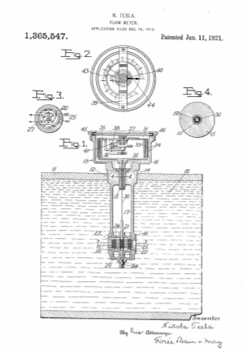

Descarga la patente original en esté enlace


Que se sepa que yo, NIKOLA TESLA , ciudadano de los Estados Unidos, que reside en Nueva York, en el condado y en el estado de Nueva York, he inventado ciertas mejoras nuevas y útiles en los medidores de flujo, de las cuales la siguiente es una descripción completa, clara y exacta.
Mi invención se refiere a medidores para medir la velocidad o la cantidad de flujo de fluido. Su objetivo principal es proporcionar una estructura novedosa, simple, económica y eficiente, directamente aplicable a un conducto a través del cual fluye el fluido y dispuesta para dar lecturas instantáneas en términos de velocidad o cantidad.
En los dibujos he mostrado una única forma de realización de mi invención en una forma deseable, y en ellos:
La figura 1 es una sección vertical central que muestra el dispositivo en uso;
La figura 2 es un detalle en planta del instrumento indicador con partes en sección.
La figura 3 es una sección horizontal en la línea 3-3 de la figura 1, y
La figura 4 es una sección ampliada en la línea 4-4 de la figura 1.
Suponiendo que el flujo de líquido 10 a través de una tubería principal 11 debe medirse en galones por hora, o pies cúbicos por segundo, la tubería principal se toma como en 12 y en el orificio roscado se atornilla el cuerpo fundido del medidor de flujo 13 . Esta pieza de fundición tiene una cintura roscada 14, con abertura central para recibir el casquillo de cojinete 15, la parte superior de la pieza de fundición está formada como una carcasa 16 para encerrar el mecanismo indicador, y su parte inferior prolongada como un tubo 17, terminando en una cabeza. 18 para recibir el elemento impulsado por flujo. Esta última, prefiero, será una turbina del tipo comúnmente identificado por mi nombre. Ilustrando simplemente sus elementos esenciales, el rotor, 19, está formado por discos paralelos 20 con aberturas centrales, estrechamente espaciados y montados en un eje, 21,
El eje 21 de la turbina se conecta con el eje 30 del indicador, que preferiblemente es de diámetro mínimo para el trabajo a realizar y que pasa por el casquillo largo 15 para conexión directa con el indicador 31. El elemento primario, 32, de este indicador, directamente montado sobre dicho eje 30, comprende preferiblemente una copa que tiene múltiples paredes verticales 33 en disposición concéntrica, estando estas intercaladas con paredes 34 de copa invertidas de un elemento secundario 35, que es pivotado y restringido a torsión y que lleva un elemento móvil de la escala de lectura. En concreto, el elemento secundario puede tener sus paredes de copa invertidas de aluminio muy fino montadas en el brazo 36, fijado al eje 37 que se desplaza sobre cojinetes joya soportados por un yugo 38, apoyado en una pieza de puente 39 que atraviesa la carcasa 16. Un enrollado primavera 40, en un extremo fijo al eje 37 y su otro extremo asegurado de manera ajustable en el espárrago partido 41, en el soporte 38, resiste el desplazamiento del elemento secundario que lleva en su parte superior una escala de lectura 43, graduada en términos de galones por hora, pies por minuto u otras unidades de medida. Este cuadrante se mueve por debajo del indicador fijo 44 que es visible a través de la mirilla 45, llevada por la tapa 46 y sellada herméticamente. Al construir el indicador de acuerdo con los principios explicados completamente en mi Patente No. 1.209.359, el elemento primario, actuando a través de las propiedades viscosas o adhesivas del aire u otro medio fluido que llena la carcasa, se hace desplazar el miembro portador de escamas contra la tensión de su resorte sustancialmente en proporción lineal a la velocidad de rotación del elemento primario,
La presión o densidad del medio fluido gaseoso en la carcasa 60 no debería estar sujeta a cambios bajo condiciones variables de presión dentro de la tubería principal, o las lecturas podrían ser seriamente inexactas; tampoco, obviamente, debe permitirse el escape del líquido de la tubería principal a la carcasa del indicador. Para sellar el rodamiento en marcha del eje 30 de manera adecuada para soportar presiones muy considerables, hago lo que llamo un "bloqueo de mercurio" con la siguiente disposición: el eje 30 está hecho de acero fino de densidad grande y uniforme y el casquillo 15 es preferiblemente de cobre duro, que tienen diámetros que dejan un espacio libre de sólo unas milésimas de pulgada, demasiado pequeño para la admisión capilar de mercurio. Estas superficies se tratan para la amalgama con mercurio. La porción de cojinete del eje 30 está finamente revestida de cobre, y luego ambas superficies de apoyo se recubren, en una solución de aceleración, con mercurio, después de lo cual se ensamblan las partes con película de mercurio. De esta manera, como se busca gráficamente y exageradamente ser representado en la Fig.4, el cuerpo de mercurio 50 se introduce en el espacio muy estrecho, y aunque es un sello unitario en su resistencia al paso de aire o agua, prácticamente puede Se considerará que forma dos películas con superficie de espejo entre el casquillo 15 y el revestimiento de cobre 51 del eje 30. He descubierto que tal bloqueo de mercurio hace un sello muy eficaz y duradero al tiempo que permite una rotación adecuadamente libre del eje.
La combinación de rotor de turbina y mecanismo indicador de arrastre de aire como se describió anteriormente es especialmente ventajosa porque la pequeña turbina, que desarrolla una alta velocidad del eje bajo un flujo de fluido incluso bastante lento, asegura que las velocidades del elemento primario serán suficientes para dar como resultado un alto par , por lo que el indicador puede ser de construcción relativamente robusta. Además, la práctica insensibilidad del instrumento de arrastre de aire a los cambios de temperatura, sin un mecanismo de compensación especial, hace que la construcción muy simple esté disponible para muchos y variados usos. Y dado que existen relaciones lineales entre la tasa de flujo de líquido, la rotación de la turbina y el desplazamiento del indicador, el marcado preciso de la escala en graduaciones uniformes depende solo del establecimiento de ciertas constantes fácilmente determinables para cualquier condición dada.
Lo que reclamo es:
En testimonio de lo cual pongo mi firma.
Fechado el 11 de enero de 1921.
Nikola Tesla.